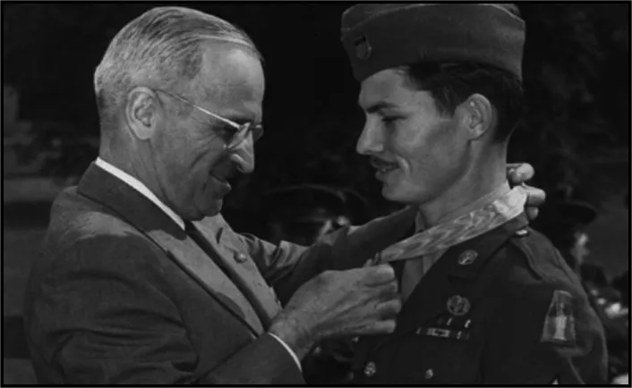

Hacksaw Ridge
Six is the number of categories in
which he was nominated for the 2017 Oscars.
A masterpiece.
Mel Gibson's film was released on 9 November 2016.
It has been nominated for a 2017 Academy Award.
In the categories, best, film, actor, and director.
It will also win awards for Best Mixing and Best Editing.
But what made the film so successful?
Yes, it's the editing, the sound, but it's mostly the realism.
Because the film is based on a true story.

US advertising poster for the film "Hacksaw Ridge"
“Tu ne tueras point”
The Conscientious objector Desmond Doss .
This film tells the story of Desmond Doss, a young man who enlists in
the army.
Born on 7 February 1919, he lives with his mother, his brother.
He lives with his mother, his brother and his violent and alcoholic father, who suffered during the First
World War.
For religious reasons, the young soldier Desmond Doss did not carry a
gun.
As a result, he trained as a field medic.
It was only after the unconfident look of his battalion that he went
to Okinawa in Japan.
During the Pacific WarHe arrived in Japan in June 1945, unarmed in the middle of the war.
His goal was not to let a soldier die at the front.
So he sets out body and soul to save as many soldiers as possible.
Whether he is an ally or an enemy, he will save everyone.

Soldier Desmond Doss
A life after war.
He will return to his family as a war hero.
He was awarded several medals, including the Medal of Honor, the highest in the United States.
Some people wanted to adapt his story into a film, but he refused.
In 2004 he was convinced by a director, Mel Gibson.
Before he died in 2006 at the age of 87.
 Award of the by Desmond Doss,
by Harry Truman.

Discover:
Mel Gibson